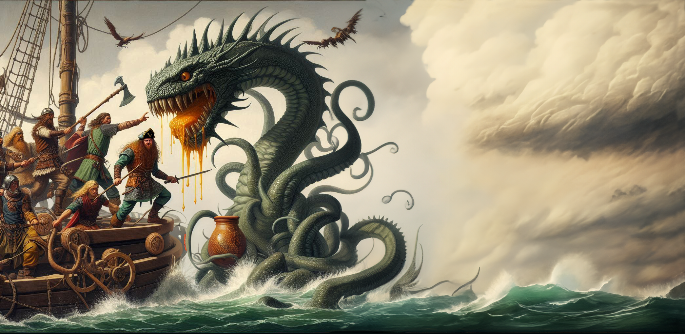

Wir sind eine mittelalterliche Folk-Rock-Band* mit Sitz in Lübeck. Unsere Leidenschaft für Met, vom Trinken bis zum Herstellen, wollen wir nun auch auf Musik erweitern. Unser erstes Album, "Goldene Liebe", ist ein Zeugnis unserer Hingabe an das Handwerk der Honig-Kelterei. Wir verstehen uns als *virtuelle Band und freuen uns die Welt mit Met zu erheitern.
 Kelterer des Wahren Mets
Kelterer des Wahren Mets
So klingt der Wahre Met: Mittelalter Folk-Rock mit Honiggeschmack
Hör' doch mal rein:


Arnulf und der Gesang der Asen
Es war ein frostiger Morgen, als Arnulf aus seinem schmalen Bett stieg. Das Holzfeuer in der Ecke seines Zimmers war lange erloschen, und der Atem hing ihm in dünnen Wolken vor dem Gesicht. Er strich sich den grauen Bart glatt und legte sich seine wärmende Wolfsfellrobe über die Schultern. Obwohl der Wind draußen an den Ritzen seiner Hütte zerrte, fühlte Arnulf die Kälte kaum. Er war seit Jahren der Priester Odins, und die magischen Gaben der Asen hatten seinen Geist und Körper abgehärtet.
Sein Heim lag am Rande eines dichten Waldes, an einem Ort, der den Menschen unheimlich vorkam. Geschichten über ihn, den alten Priester, waren weit verbreitet. Man sprach von seinen Heilkräften, von den Flüchen, die er brechen konnte, und davon, dass er in den stürmischen Nächten das Flüstern der Götter hörte. Arnulf jedoch sah sich selbst nur als Diener. Ein Mann, der die alten Riten kannte und die Verbindung zwischen dem Sterblichen und dem Ewigen bewahrte.
An diesem Morgen spürte Arnulf, dass der Tag anders sein würde. Es war, als zöge etwas Uraltes, Schweres durch die Luft – eine Macht, die nicht lange unbemerkt bleiben konnte. Er nahm seinen Stab, an dem Runen aus uraltem Holz eingeschnitzt waren, und trat hinaus in die kalte Morgenluft. Nebel umwogte den Boden, während sich die Sonne mühsam über den Horizont kämpfte.
"Priester Arnulf!" Eine tiefe Stimme durchbrach die Stille.
Arnulf drehte sich um und sah einen breitschultrigen Krieger auf ihn zukommen. Sein Helm war schief aufgesetzt, und seine Augen waren von tiefen Sorgenfalten durchzogen. Es war Halvar, der unbezwingbare Krieger, doch heute wirkte er gebrochen. Er stützte sich schwer auf sein Schwert, das noch mit Schlamm und Blut aus der letzten Schlacht besudelt war.
"Was führt dich zu mir, Halvar?" fragte Arnulf mit einer ruhigen Stimme, die zugleich beruhigend und mächtig klang. Der Krieger war in seinem Dorf für seine Unerschrockenheit bekannt, doch jetzt zitterte seine Hand, als er sprach.
"Es ist Siegrid," sagte Halvar schwer atmend, "Sie ist verletzt. Sterbend, wenn du nichts tust." Seine Augen flackerten, und Arnulf konnte den Schmerz in ihnen sehen.
"Bring sie zu mir," antwortete Arnulf und nickte leicht, als wüsste er schon, was zu tun war.
Binnen Minuten trugen zwei andere Krieger eine junge Frau auf einer improvisierten Bahre herbei. Siegrid die Mutige, bekannt für ihren Kampf gegen Eisriesen und Barbaren. Doch nun lag sie leblos da, ihre Augen geschlossen, ihre Haut blass wie Schnee. Arnulf ließ sich zu ihr nieder und legte seine Hand sanft auf ihre Stirn. Die Kälte des Todes kroch bereits durch ihre Adern.
"Was ist geschehen?" fragte Arnulf leise, während er ihre Wunden musterte. Die anderen Krieger standen stumm da, als wüssten sie, dass Worte nichts mehr ändern könnten.
"Der Fluch," flüsterte Halvar schließlich, "Der Fluch der Eisriesen. Sie haben sie mit einem dunklen Zauber belegt. Kein Schwert konnte sie retten, keine Medizin."
Arnulf schloss die Augen. Er spürte den Schatten, der auf Siegrids Seele lastete, doch es war nicht der Tod, der sie bedrohte. Es war etwas Tieferes, etwas, das aus einer anderen Welt stammte. Die Flut der Asen in ihm wallte auf, und er hörte das ferne Flüstern, das durch die Wipfel der Bäume und den Wind wehte.
"Der Gesang der Asen," murmelte Arnulf und stand auf. Er wandte sich zum Wald, während die Krieger in atemloser Erwartung zurückblieben.
Arnulf trat an die Baumgrenze und hob seinen Stab. Er begann zu murmeln, die uralten Worte der Götter, die Sprache der Asen, die nur wenige je gehört hatten. Der Wind schien auf sein Kommando zu hören, drehte sich und trug seine Stimme weit in den Himmel. Der Nebel um ihn herum wirbelte auf, als ob unsichtbare Hände ihn formten. Die Luft knisterte von Magie.
Plötzlich kam Bewegung in die Wolken über ihnen, und Arnulf öffnete die Augen. Ein Lichtstrahl durchbrach den Himmel, gleißend und warm. Es traf Siegrid, die auf ihrer Bahre lag. Ein tiefes, fernes Brummen, fast wie Gesang, erfüllte die Luft.
Arnulf wusste, was er zu tun hatte. Er drehte sich zu Halvar um. "Bringt mir das Horn mit Mēt," sagte er ernst. "Der reine Honigwein wird ihr helfen, aber der Segen der Asen ist, was sie wirklich braucht."
Eilig reichte Halvar ihm das Horn, und Arnulf tauchte es in den Lichtstrahl. Die goldene Flüssigkeit schimmerte, als sie durch den Segen der Götter erleuchtet wurde. Er kniete sich wieder zu Siegrid, hob sanft ihren Kopf und flößte ihr den Mēt ein. Sie zitterte, ihr Körper spannte sich an, als das Licht in sie strömte. Plötzlich öffnete sie die Augen, keuchte nach Luft und griff nach Arnulfs Hand.
"Du bist gerettet," flüsterte er. "Die Asen haben dir ihre Gunst gewährt."
Die Krieger um sie herum starrten ehrfürchtig auf die Szene. Siegrid, die Mutige, saß aufrecht, lebendig, als wäre der Schatten des Todes niemals über sie gekommen.
Arnulf lächelte leicht. "Die Asen beschützen jene, die mutig sind," sagte er und richtete sich auf. "Doch merke dir, Siegrid, der größte Kampf wird immer in deinem eigenen Herzen ausgetragen."
Mit diesen Worten drehte er sich um und verschwand langsam im Nebel des Waldes. Die Krieger standen still, während Siegrid ihn mit einem neuen Glanz in den Augen ansah. Sie hatte den Tod gesehen, aber auch die Götter, und sie wusste, dass sie niemals alleine kämpfen würde.

Orik Alriksons honig-süßer Raubzug
In einer verrauchten Hafenkneipe irgendwo an der wilden Ostseeküste saß Orik Alrikson, Kapitän der Durstigen Drachin. Er hatte gerade seinen dritten Krug Met – wahren Met, nicht dieses verfluchte Zeug aus Katlenburg! – geleert, als er ein Gespräch zwischen zwei besonders nervösen Händlern am Nachbartisch aufschnappte.
„Eine Kogge voller Gold!“, flüsterte der eine, die Augen weit vor Gier. „Auf dem Weg nach Lübeck. Der Kapitän hat Angst vor Piraten, aber ich sage dir, kein Pirat würde bei diesem Wetter auslaufen.“
Orik grinste und rülpste leicht. Kein Pirat? Oh, die werden sehen. Er nickte seiner Mannschaft zu, die sogleich begriff. Egal wie das Wetter spielte, eine koggenreiche Nacht wartete auf sie.
Als die Durstige Drachin in See stach, begrüßte sie ein tobender Sturm. Die Wellen peitschten gegen den Bug, und der Wind blies ihnen Gischt ins Gesicht. Orik, die Hände fest am Steuerrad, lachte trotzig. „Ein bisschen Wind hat uns noch nie aufgehalten!“, brüllte er in den Sturm. Die Mannschaft kämpfte gegen die Elemente, während Valadur, der Troubadour, tapfer versuchte, ein Seemannslied zu singen, obwohl ihm der Regen ins Gesicht klatschte. „Wir segeln ins Gold, ohhh— gluck-gluck— und ins Glück, ohhhh— gluck-gluck—!“
Gerade als es schien, der Sturm würde ihnen das Segel zerreißen, brach plötzlich Stille herein. Der Himmel klärte sich, und in der Ferne tauchte die prächtige Handelskogge auf. Orik schnaubte zufrieden. „Na also, Männer! Jetzt wird geplündert!“
Die Mannschaft kicherte düster, während sie die Kanone klar machten. „Ein Warnschuss, nur damit sie sich in die Hosen machen!“
Mit einem lauten Knall flog die Kanonenkugel über den Bug der Kogge hinweg und ploppte in die See. Die Kogge schwankte nur leicht, aber etwas anderes regte sich wild im Wasser. Etwas, das in Eriks Erfahrung nicht passiert, wenn man einen Warnschuss abgibt.
Das Gurgeln wurde zu einem gewaltigen Strudel, und plötzlich schoss eine tentakelbewehrte Monstrosität aus den Tiefen empor.
„Ach du heiliger Honigwein!“, brüllte Orik, während ein gewaltiger Tentakel sich bedrohlich über das Deck schob.
Orik griff seine Axt und brüllte: „Schlagt zu, Männer! Wir sind doch keine Lachse auf dem Teller!“ Doch der Kampf gestaltete sich schwieriger als gedacht. Der Tentakel packte einen Matrosen, zog ihn in die Höhe und... spuckte ihn direkt wieder aus. Der Matrose landete mit einem lauten Platschen zurück auf dem Deck, zögerte einen Moment, sah sich verwirrt um und grinste dann: „Tja, hab wohl nicht geschmeckt.“
Orik sah sich das mit hochgezogenen Augenbrauen an, während der Tentakel sich den nächsten Matrosen schnappte, nur um auch diesen angewidert zurückzuschleudern. Plötzlich dämmerte es ihm: „Der Met! Wir schwitzen ja regelrecht Honig aus unseren Poren! Das Vieh muss allergisch sein!“
Valadur, der immer eine poetische Antwort parat hatte, überlegte laut: „Vielleicht… sind wir wie süße, klebrige Bienen für dieses Ungeheuer. Es hasst Honig!“
Orik rieb sich nachdenklich den Bart. „Wenn das stimmt, dann... Smutje! Wo ist unser Vorrat an Honig?“
Der Smutje Torfin, der gerade versuchte, einem Tentakel zu entkommen, rief im Laufen: „In der Kombüse! Ein riesiger Topf, wir wollten doch das Met-Rezept aus Lübeck probieren!“ Orik grinste breit. „Dann holen wir uns das süßeste Mittel gegen Seeungeheuer!“
Während der Rest der Mannschaft das Monster ablenkte – einige wurden weiterhin angewidert ausgespuckt –, eilte Torfin in die Kombüse und kam wenig später mit einem riesigen Honigtopf zurück. „Hier, Kapitän!“, keuchte er.
Orik grinste. „Guter Mann! Jetzt ab in den Rachen damit!“
Mit vereinten Kräften hievten sie den Topf auf einen der Tentakel, der sogleich begann, das klebrige Ding in Richtung des weit aufgerissenen Mauls zu schieben. Das Seeungeheuer schnappte zu, doch kaum hatte es den Honig geschluckt, begann es wild zu zucken und zu winden. Mit einem ohrenbetäubenden Brüllen verschwand es im Wasser, und die See wurde wieder ruhig.
„Tja, da hat’s ihm wohl gereicht“, sagte Orik zufrieden und ließ sich auf ein Fass sinken. Die Mannschaft lachte, noch immer benommen vom Sieg.
Kurz darauf näherte sich die Handelskogge, und der Kapitän – ein blasser, dünner Mann mit zu großem Hut – lehnte sich über die Reling und rief: „Oh, ihr tapferen Männer! Ihr habt uns gerettet! Ohne euch wären wir verloren gewesen!“ Orik blinzelte. „Äh... Ja. Gerettet. Natürlich.“ Er wischte sich einen Tentakelrest von der Schulter und versuchte, nicht zu sehr wie jemand auszusehen, der eine Kogge ausrauben wollte.
„Bitte, bitte, nehmt dies als Zeichen meiner Dankbarkeit!“, rief der Kapitän und warf einen Beutel voller Goldmünzen auf Oriks Deck. „Ich weiß, ohne euch wären wir verloren gewesen. Ihr habt uns vor diesem schrecklichen Monster gerettet!“
Orik, völlig perplex, starrte den Beutel an. „Ähm... ja, klar. Gerne. Immer zu Diensten.“ Seine Mannschaft warf ihm verwirrte Blicke zu, aber niemand sagte etwas. Schließlich war Gold Gold.
„Ich muss mich entschuldigen“, fuhr der Kapitän der Kogge fort, während er sich verbeugte. „Ich dachte zuerst, ihr wärt Piraten, die mein Schiff aufbringen wollen! Welch ein Irrtum!“
Orik hustete peinlich berührt. „Ja, ja... das wäre doch absurd, oder?“
Der Kapitän nickte begeistert. „Völlig absurd!“
„Absolut“, murmelte Orik und grinste schief. „Piraten? Pah!“
„Dann wünsche ich euch weiterhin eine sichere Reise, ihr Helden der See!“, rief der Kapitän, winkte noch einmal freudig und segelte davon.
Orik stand einen Moment still da, dann drehte er sich zu seiner Mannschaft um, die mit unterdrücktem Lachen auf ihn starrte.
„Nun, Jungs“, sagte er grinsend und hob den Beutel. „Ich schätze, das war der einfachste Raubzug, den wir je hatten.“
Die Männer brüllten vor Lachen, und als sie mit vollen Krügen Met anstießen, konnte niemand sagen, ob sie das Seeungeheuer besiegt oder einfach nur zu Tode verwirrt hatten. Aber eines war sicher: Der Honig war ein Volltreffer – sowohl gegen Monster als auch für ihren Durst.